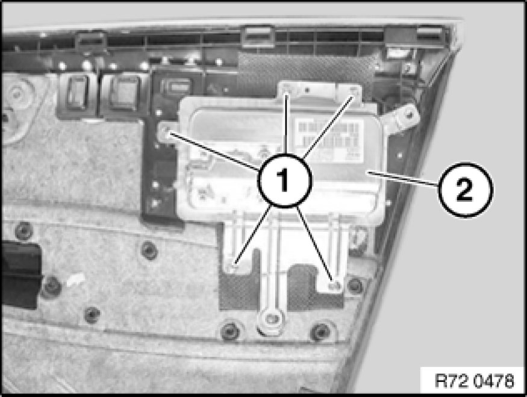

Removing and Installing/Replacing Airbag Module on Left or Right Rear Door
72 12 015 - Removing and installing/replacing airbag module on left or right rear door

Warning!
Read and comply with [1][2]Safety Regulations for Handling Components with Gas Generators safety regulations for handling airbag modules and pyrotechnical belt tensioners.
Follow instructions for unlocking and locking airbag plug connections Unlocking/Locking Airbag Plug Connections.
Incorrect handling can activate airbag and cause injury.

Necessary preliminary tasks:
- Disconnect battery negative lead Instructions for Disconnecting and Connecting Battery from starter battery
- Remove rear door trim Removing and Installing Left or Right Rear Door Trim Panel

Unscrew nuts (1).
Remove airbag module (2).